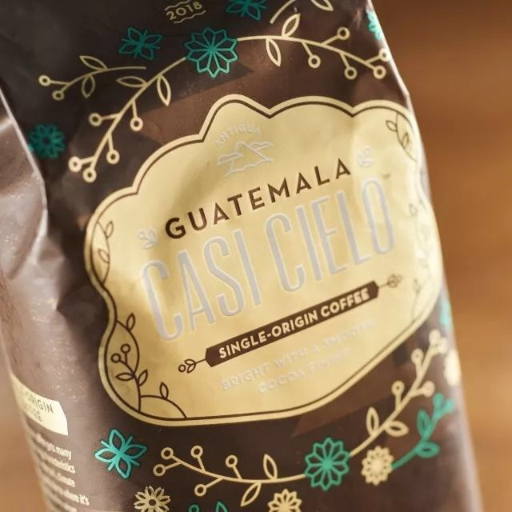
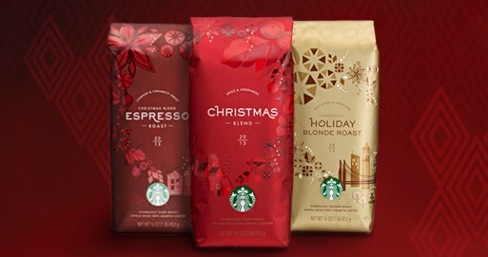

危地马拉卡西塞罗
Casi Cielo [ka:si] [si’elo]在西班牙语中Casi是几乎的意思，可以理解成“简直就是”，Cielo的含义是天空，我们把它翻译成“宛若天堂” 星巴克从安提瓜山脉最好的农场采购咖啡已经超过20年时间。这里的咖啡农庄海拔均在1500米以，被三座火山所环绕：Agua，Acatenango和Fuego。我们与当地农民的合作已经开展了很多年，并且为当地的居民和咖啡农们融资，建立了免费的医疗诊所 而卡西塞罗于2005年正式引入星巴克，它是在2003由一位厨师和几名顾客共同创造的咖啡！西雅图一家特别好的餐厅。叫做Canlis，是一个食物非常考究，而且就餐环境比较庄重的地方，到其用餐的顾客都是穿着燕尾服，整个用餐环境非常的庄严。为了找出一款能够搭配Canlis的咖啡，于是厨师和顾客共同创造了卡西塞罗，这就是其的由来。
圣诞综合
圣诞节是什么？是纪念耶稣出生那一瞬间的感动？是装饰着圣诞树时那一种难以抑制的兴奋？还是闭上眼蜷在被窝里想象着圣诞老人到来的期待？其实它更像是从烤箱里头散发出来的姜饼的甜香它更像是一种弥漫在空气中的红色的精神呼唤着身边和远方的人|在一起的圣诞节·暖暖的|。这又是一个有点久远的小故事就像圣诞老公公还没有大胡子的时候（当然也没有那么远在1984年星爸爸还很简单只有5家小小的门店卖点新鲜烘焙的咖啡豆、漂亮的茶叶、大块的巧克力还有各种各样的香料和生爆米花那个时候的咖啡豆还没有那么精美漂亮的包装这些上好的咖啡豆都被包装在一个简单的纸袋子里那个没有单向阀也没有密封包装的年代这些上好的咖啡豆只能够有7天的生命，就在这时就在这个带着希望又让人无比期待的日子到来之前我们带来了一份特殊的礼物——一款新的咖啡豆虽然有点简陋，但是沉甸甸的都是我们想要分享的祝福，虽然有点简单，但是满当当的都是我们想要分享的旋律。从1984年来到今天当我们打开每一包【圣诞综合】看见每一颗油量饱满的咖啡豆时那些时隔32年依旧闪闪发亮的不正是【圣诞精神】么！
